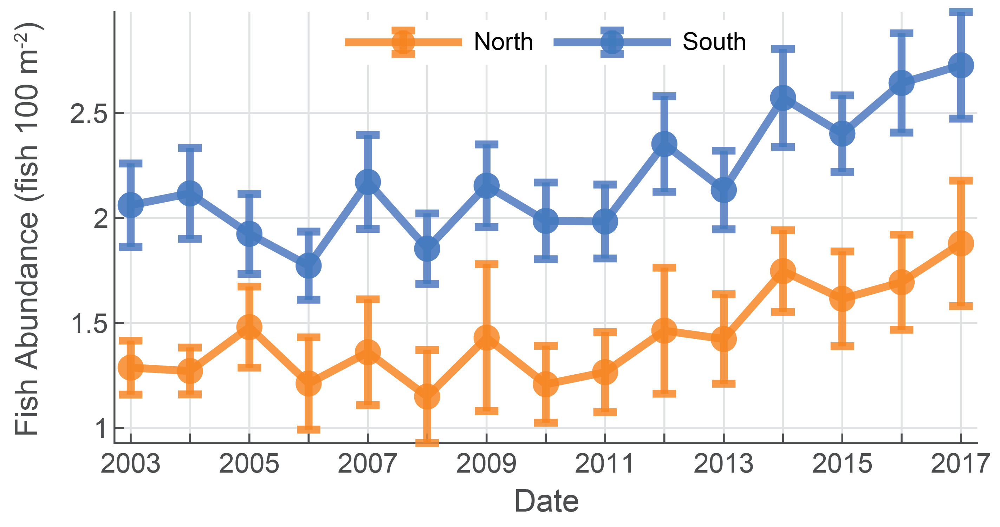
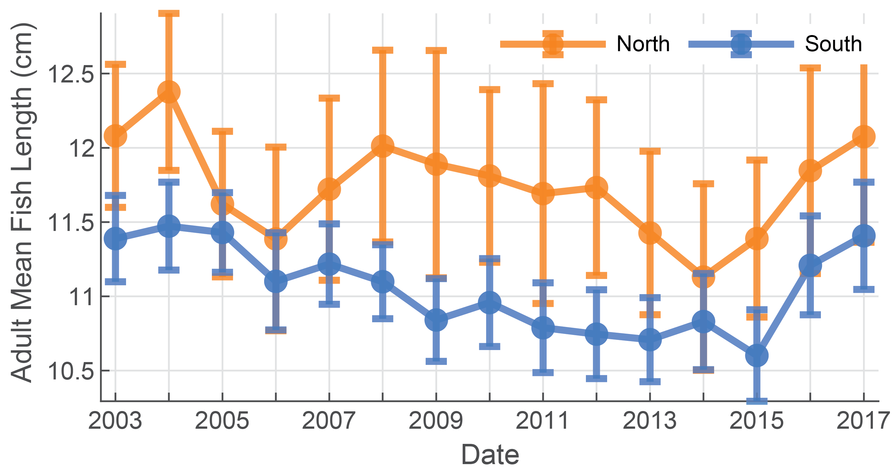
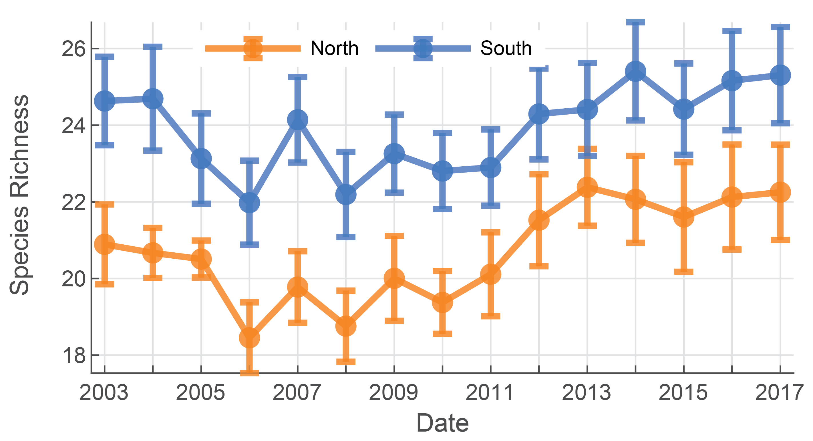
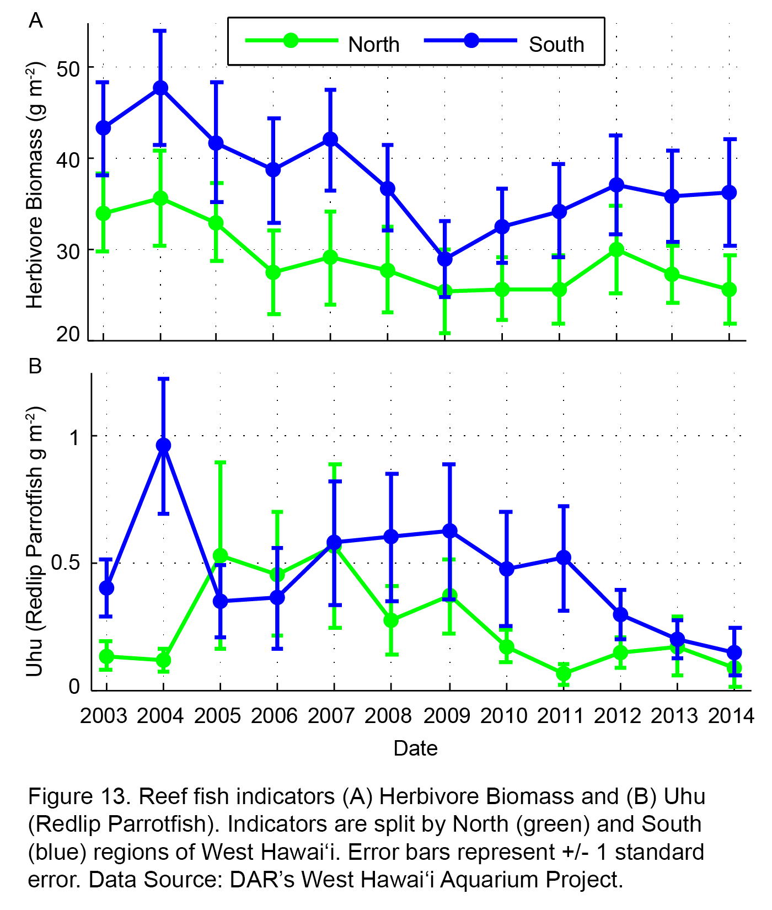
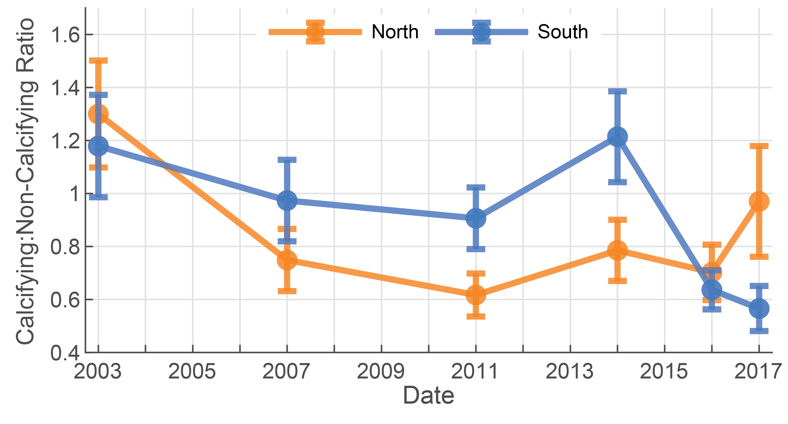
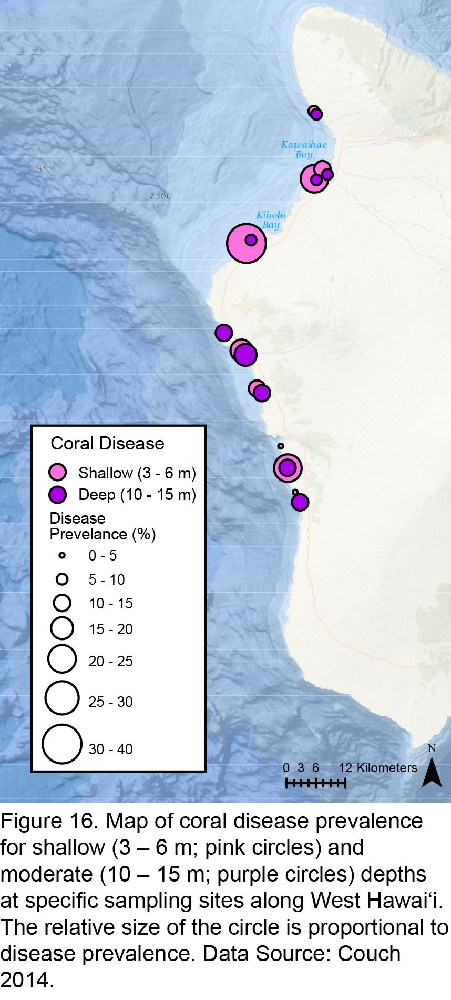

West Hawai'i Ecological Indicators
West Hawai'i's ecological indicators tell us the current and historical conditions of coral, fish, and algae, which compose important parts of the ecosystem on the west coast of the island of Hawai'i. These indicators are specific, well defined and measurable variables that have been proven to reflect the status of some component of the ecosystem and provide a practical means to judge changes in ecosystem
Coral reefs are one of the most productive and biologically diverse marine ecosystems on the planet, serving key ecological functions across tropical marine environments. Moreover, coral reef ecosystems provide important ecosystem services, including coastal protection, foodresources, tourism, and fisheries, that are critical for coastal communities and local economies (Knowlton, 2001). However, coral reefs across the globe continue to decline due to the combined impacts from pollution, overfishing, invasive species, climate change, and other pressures (Knowlton & Jackson, 2008). These threats undermine the economic, social, and cultural benefits provided by coral reefs, including important food security functions, cultural practices, and livelihoods (Kittinger et al., 2012).
Here, we present a suite of indicators to track the status and trends of West Hawai'i's coral reef fish and benthic communities. These data were collected as part of a long-term monitoring effort implemented by DAR's West Hawai'i Aquarium Project (WHAP; Walsh et al., 2013). As such, indicators are based on a combination of ecological relevance, sensitivity to local pressures (e.g., fishing pressure), and being applicable to the in situ survey data collected by the WHAP monitoring program.
-
Reef fisheries have substantial social, cultural and economic value in Hawai'i, yet knowledge on their sustainability is relatively limited (Pauly & Zeller, 2014). This is in part because coral reef fisheries are characteristically multi-species, multi-gear and have significant non-commercial components (Kittinger et al., 2015). Indeed, non-commercial fishing plays an important social, cultural, and subsistence/consumptive role for local communities in Hawai'i and is estimated to be well over two times the reported commercial catch (Zeller et al., 2005; Zeller et al., 2008). Here we present a combination of indicators that relay information on the coral reef ecosystem and fishery status. We have used a selection of indicators that track the status and trends at the individual species, functional group, and community levels. As described in more detail below, these indicators convey information specific to detecting fishing effects, ecosystem structure and function and coral reef ecosystem resilience.
-

This is a community level indicator of fish density, the total number of reef fish standardized by the unit area of reef (Figure XX). Fish density is a major factor determining the functional role and influence reef fishes have in a coral reef ecosystem. Spatial and temporal variability in fish density is a product of numerous factors. For instance, fish abundance varies by habitat quality (Feary et al. 2007), environmental variability and its influence on population demography (i.e. recruitment and natural mortality) (Sale 2004), and fishing pressure (Friedlander & DeMartini 2002, Guillemot et al. 2014).
Since 2003, the total abundance of nearshore fishes in West Hawai‘i was 30% – 45% greater in the South compared to the North. In both regions, total abundance was relatively unchanged from 2003 – 2011. However, an overall increasing trend was evident since 2011, with the greatest abundance of the past 15 years observed in 2017. An anomalous recruitment pulse was observed in 2014 across a number of locations in the state (Talbot 2014) and also West Hawai‘i (Walsh 2014). The recent increase in fish abundance observed in both regions may be attributable to this anomalous year for fish recruitment.
-
 The body weight of individual fish per survey is calculated based on their body length and then aggregated to the body weight of the fish assemblage per unit area. Fish biomass conveys related, but slightly different information compared to fish abundance. Specifically, two reefs might have the same abundance, but very different biomass estimates based on the size distribution of fishes in the assemblage. It is useful to consider biomass in addition to abundance because the ecological impact of fishes on a reef is often related to the size of fishes (see herbivore biomass description below). In addition, the status of the fishery is more directly related to fish population biomass rather than solely on the number of fish (Guillemot et al. 2014).
The body weight of individual fish per survey is calculated based on their body length and then aggregated to the body weight of the fish assemblage per unit area. Fish biomass conveys related, but slightly different information compared to fish abundance. Specifically, two reefs might have the same abundance, but very different biomass estimates based on the size distribution of fishes in the assemblage. It is useful to consider biomass in addition to abundance because the ecological impact of fishes on a reef is often related to the size of fishes (see herbivore biomass description below). In addition, the status of the fishery is more directly related to fish population biomass rather than solely on the number of fish (Guillemot et al. 2014).Total biomass of nearshore fishes in West Hawai‘i has been consistently greater in the South compared to the North; however, both regions exhibited year-to-year variability over the past 15 years. For example, total biomass was just 5% greater in the South in 2009, whereas in 2014 it was as high as 65%. Presently, fish biomass is approximately 30% greater in the South compared to the North. Although a steady increase in fish biomass has been observed over the past few years, the within region variability has also steadily increased, indicating that larger differences in fish biomass presently exist between reefs surveyed than that have been observed historically along West Hawaii.
-
This is the mean length (cm) of mature fishes and is calculated by averaging all fishes larger than 40% of their maximum length. As fishing pressure increases, the average length of targeted species decreases (Ault et al. 2014, Nadon et al. 2015). This is because fisheries tend to target large fishes, and because fishing mortality reduces the number of fishes that reach older and larger life stages. Previous work has found that reductions in mean length of the whole assemblage are indicative of a shift towards smaller species and/or smaller individuals of the same species, and that this can be driven by moderate levels of fishing pressure (Guillemot et al. 2014).
Mean adult fish length steadily decreased along West Hawai‘i until 2014. However, the past 3 – 4 years has shown an overall increasing trend in both regions, with present day length of adult fishes nearly equal to those in 2003.
-
This is the total number of species present per survey. Coral reefs are renowned for being one of the most diverse ecosystems on the planet and these complex ecosystems provide important ecosystem services. The majority of tourists that visit Hawai’i engage in marine-based activities, including diving and snorkeling (Beukering & Cesar 2004), and fish diversity is one amongst a variety of factors that drives visitor destination choice (Uyarra et al. 2005). In addition to the aesthetic value, biodiversity is intrinsically linked to ecosystem function and greater species diversity supports more productive fisheries (Moberg & Folke 1999, McClanahan et al. 2011). Furthermore, species diversity is linked to diversity in responses to environmental change amongst species that perform similar ecosystem functions on a reef, and as such is considered a critical aspect of ecosystem resilience (Elmqvist et al. 2003).
Species richness has historically been greater in the South than in the North but overall has not shown the same dramatic changes as some of the other reef fish indicators presented herein (e.g. Total Biomass). Note: visual surveys of reef fishes do not capture all species present in an area, and so the data here are best considered as a relative measure of species richness, which is one measure of biological diversity.
-
Herbivore biomass represents the total weight of herbivorous fishes per unit area. Herbivores (i.e. species for which plant material makes up a majority of their diet) compromise a large part of the fish community assemblage in Hawai‘i (Williams et al. 2015b). Herbivorous fishes also make up ~1/3 of species landed by nearshore fishing in certain areas of West Hawai‘i, with the majority being kept for home consumption, although they also dominate the reef fish species sold to commercial markets (Kittinger et al. 2015). In addition to being important commercial and non-commercial reef fisheries targets, herbivorous fishes are a key component and indicator of resilience, that is, the ability of a reef to maintain or recover to a coral dominated state following disturbance, and avoiding a phase-shift into algal dominance (Green & Bellwood 2009). Multiple drivers, operating at various scales can undermine coral reef resilience, such as over-extraction, pollution and climate change. Of these, the diminished abundance of functionally important herbivores is one of the few that is possible to manage through local management action.
Over the past 15 years, the highest biomass of herbivorous fishes was observed in the most recent survey, indicating an overall positive trend in this important reef-fish indicator. The observed increase occurred principally over the 2009 – 2017 time frame, with a relative increase of 48% and 97% recorded in the North and South, respectively. The most recent survey also showed the South to have 50% greater herbivore biomass compared to the North.
-
Large parrotfishes, like Uhu (e.g., Redlip Parrotfish, Scarus rubroviolaceus), are a preferred fisheries target throughout the Pacific, and the Redlip Parrotfish is one of the main target species within the parrotfish complex in Hawai'i (Sabater & Carroll, 2009; Houk et al., 2011; Bejarano Chavarro et al., 2013; DeMartini & Howard 2016). The deep gouging bites of large herbivores, like Uhu, can prevent macroalgae from becoming established, as well as open up new settlement sites for coral recruitment (Bonaldo et al., 2014). The fact that functional impact (the area grazed) increases non-linearly with parrotfish size (Lokrantz et al., 2008), combined with this species' life history rendering it vulnerable to fishing pressure, means that the Uhu can be considered a disproportionately important yet susceptible component of the fishing community. Based on the duality of this species in terms of fisheries and functional importance, its biomass can be indicative of two things: fishing pressure and reef resilience. Uhu biomass in both regions has shown considerable variation over the data record (Figure 13B). However, current (2014) Uhu biomass is lower than the maximum biomass observed in 2007 and 2004 for the North and South, respectively.
-
The yellow tang is of significant importance to the Hawaiian aquarium industry, as it is the primary species collected in Hawai‘i (Walsh et al. 2003). The bulk of the aquarium trade sources fish from West Hawai‘i; approximately 70% of the fish caught in the State are from West Hawai‘i with juvenile yellow tang comprising ~85% of the total catch (Walsh et al. 2013). As such, the status of this fish around West Hawai‘i is of high fisheries management relevance. Observed declines in reef fishes due to the aquarium trade are what triggered the establishment of the Fish Replenishment Areas (FRAs) in West Hawai‘i in 1999. The data presented here are collected as part of the long-term monitoring conducted to assess the efficacy of this network of closed areas, which over time have proved to be highly effective in increasing the density of these long-lived species. Collectors target young juveniles, and as such, we report juvenile Yellow Tang abundance here.
From 2003 to 2017, the abundance of juvenile yellow tang increased by 18.5% and 81.7% in the North and South, respectively. Historical trends show an overall decline between 2003 and 2008 followed by a 2 – 3 fold increase between 2008 and 2017.
Coral reef development and persistence are reliant on benthic, sessile organisms that deposit calcium carbonate, namely hard (Scleractinian) corals and crustose coralline algae (CCA). Fleshy algae, such as turf and various forms of erect macroalgae, also serve important ecological functions such as providing food resources for a number of reef fishes (Mumby et al., 2006). In the absence of local human pressures, calcifying organisms tend to dominate coral reef ecosystems (Williams et al., 2015a). Although variations in environmental forcing can tip the competitive balance in favor of fleshy algae on remote, undisturbed reefs (Gove et al., 2015), human-related pressures are more often responsible for shifting reef communities towards a dominance of weedy, fast growing algal species (Pandolfi et al., 2005). Monitoring changes in benthic community organization is therefore critical if we hope to understand coral reef community succession and responses to various environmental and human-related pressures. Here we present a few key indicators that help track the status and trends in ecological function and integrity of benthic coral reef communities.
-

The total cover of hard coral (Scleractinian) in a given area generally corresponds with the amount of reef topographic complexity, habitat structure, reef accretion, and diversity and abundance of coral-dependent species (McClanahan et al. 2011). Moreover, a number of reef-fish species are heavily reliant on the availability of coral dominated, structurally complex areas, serving as the preferred habitat for fish recruitment and juvenile fish stages (Walsh 1984).
The total cover of hard coral across West Hawai‘i was approximately 18% in 2017, representing a relative change of -61% and -49% since 2003 in the North and South, respectively. Much of the coral loss can be attributed to thermal stress event in 2015 when up to 90% of corals bleached across West Hawai‘i. However, it’s important to note that historical data indicate coral cover was as high as 80% in specific locations (e.g. Puakō) in the 1970s, indicating incredibly dramatic losses in coral cover have occurred over the past 40 – 50 years (Minton et al. 2012).

-
 Fleshy (i.e. non-calcifying) algae are part of a healthy reef community, providing food for a variety of herbivorous fishes and invertebrates. However, fleshy algae can grow rapidly and if left unchecked can compete with hard corals for reef space, inhibit coral recruitment, and reduce coral survival (Hughes et al. 2007). In addition to serving as an indicator for benthic communities organization and health, tracking the abundance of macroalgae can also indicate other important processes occurring within coral reef ecosystems, including nutrient enrichment and the intensity of herbivory (McClanahan et al. 2002).
Fleshy (i.e. non-calcifying) algae are part of a healthy reef community, providing food for a variety of herbivorous fishes and invertebrates. However, fleshy algae can grow rapidly and if left unchecked can compete with hard corals for reef space, inhibit coral recruitment, and reduce coral survival (Hughes et al. 2007). In addition to serving as an indicator for benthic communities organization and health, tracking the abundance of macroalgae can also indicate other important processes occurring within coral reef ecosystems, including nutrient enrichment and the intensity of herbivory (McClanahan et al. 2002).Over the past 15 years, the combined cover of Macroalgae and Turf algae (i.e. Total Algal Cover) has exhibited a relative increase of 23% and 35% in the North and South, respectively. The trend in algal cover was very similar in both regions – steadily increasing from 2003 – 2011 and then decreasing between 2011 – 2014. However, since the 2015 thermal stress event, algal cover in the North has decreased by 5% while the South has exhibited a 12% increase. The overall increase in total algal cover across West Hawai‘i is almost entirely due changes in Turf algae, as West Hawai‘i has very low (less than 2%) macroalgae percent cover (Walsh et al., 2014), a finding that has also been reported for Hawai‘i Island in other studies (Bruno et al. 2014, Williams et al. 2015a).
-
The ratio of calcified to non-calcified benthic organisms represents the combined cover of reef building hard corals (Scleractinian) and calcifying algae (crustose coralline algae and Halimeda) to the combined cover of turf and fleshy macroalgae. Foundational benthic organisms that contribute to coral reef development and persistence are those that are calcifying, serving a number of key ecological processes including settlement, recruitment, and cementation of reef structure (Williams et al. 2015a). Fleshy and turf algae directly compete with calcifying organism for space, and in high abundance, indicate a degraded ecological state (Hughes et al. 2010). Therefore, calcified to non-calcified ratio of benthic organisms serves as an important indicator of coral reef community dynamics and the extent to which a given system is dominated by reef accreting benthic organisms.
In 2017, the ratio of calcified to non-calcified cover across West Hawai‘i is less than 1, which is a potentially important threshold as it represents a shift in the relative dominance from calcifying to non-calcifying benthic organisms. More simply put, coral reef ecosystems across much of West Hawai‘i are now dominated by algae. Recent increases in this ratio in the North may indicate signs of recovery following the 2015 thermal stress event. It is uncertain what proportion of the benthos needs to be dominated by reef builders to maintain a reef in a state of net accretion as oceanographic conditions, community structure, and local human impacts each play a role in overall reef growth. However, it seems logical that coral reef ecosystems with a greater abundance of reef builders will have higher rates of net reef growth and accretion compared to reefs dominated by non-calcifying organisms (Smith et al., 2016).
-
Tracking patterns in coral health and disease dynamics is important for understanding underlying causes of changing coral reef ecosystem health. During the last four decades, coral disease has steadily increased both spatially and temporally across the globe, affecting coral health from the physiological to the ecosystem-level. Originally restricted to the Caribbean, coral disease is now a major threat to Indo-Pacific and Hawaiian reefs (Aeby et al., 2011; Ruiz-Moreno et al., 2012). While the causes of increasing coral disease are poorly understood, coral disease risk has been linked to the compounding effects of climate change, local anthropogenic inputs, and distribution of susceptible host populations (Harvell et al., 2007; Williams et al., 2014). For this reason, coral disease is a useful early indicator of changing reef health and changing environmental conditions.
Along West Hawai'i, coral health and disease assessments conducted in 2010 and 2011 indicated that overall disease prevalence was higher in shallow (3-6 m) zones (average of 15.2%) than deep (10-15 m) zones (10.6%), but varied considerably across the coastline (Figure 16). Spatial patterns were primarily driven by the most prevalent disease Porites growth anomalies, which occurred at 100% of the sites at an average prevalence of 13.7% (Couch et al., 2014a). Based on high prevalence of certain coral health conditions, Couch et al., (2014a) identified four regions of concern (Puakō, Mauna Lani, Kaupulehu, and Hōnaunau; see Figure 2 for geographic locations). Other studies along West Hawai'i indicate that Porites growth anomalies dynamics may be driven by exposure to elevated nutrients in submarine groundwater discharge (Couch et al., 2014b), colony size, and water motion (Couch, 2014). The high spatial variation in coral health not only advances our understanding of coral disease ecology, but also supports reef resilience planning by identifying vulnerable areas that would benefit most from targeted conservation and management efforts.